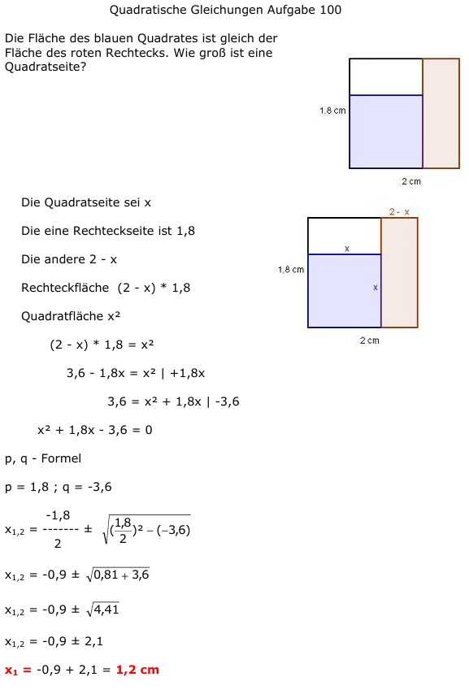

Aufgabe 100
Die Fläche des blauen Quadrates ist gleich der
Fläche des roten Rechtecks. Wie groß ist eine
Quadratseite?
Die Quadratseite sei x
Die eine Rechteckseite ist 1,8
Die andere 2 - x

Rechteckfläche (2 - x) * 1,8
Quadratfläche x²
(2 - x) * 1,8 = x²
3,6 - 1,8x = x² |+1,8x
3,6 = x² + 1,8x |-3,6
x² + 1,8x - 3,6 = 0
p, q - Formel
p = 1,8 ; q = -3,6
 x1,2 = -0,9 ± 2,1
x1 = -0,9 + 2,1 = 1,2 cm
Die Lösung ist plausibel, sie muss größer als 0
(keine negative Länge) und
kleiner als 1,8 cm sein (sonst entstehen keine
3 Flächen).
x2 = -0,9 - 2 = -3 keine Lösung,
es gibt keine negative Länge
x1,2 = -0,9 ± 2,1
x1 = -0,9 + 2,1 = 1,2 cm
Die Lösung ist plausibel, sie muss größer als 0
(keine negative Länge) und
kleiner als 1,8 cm sein (sonst entstehen keine
3 Flächen).
x2 = -0,9 - 2 = -3 keine Lösung,
es gibt keine negative Länge